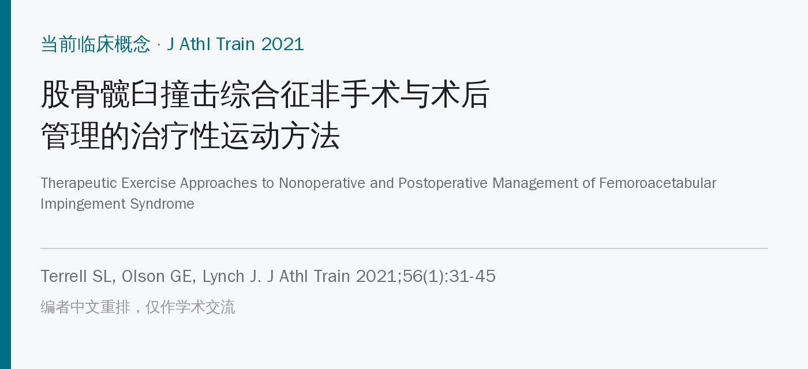
🔖原文信息（编者中文重排）
📚 文献信息
▪ Terrell SL, Olson GE, Lynch J. Therapeutic exercise approaches to nonoperative and postoperative management of femoroacetabular impingement syndrome. J Athl Train. 2021;56(1):31-45. doi:10.4085/1062-6050-0488.19
▪ 中文题目：股骨髋臼撞击综合征非手术与术后管理的治疗性运动方法
▪ 作者来自美国佛罗里达南方学院运动科学系、护理与健康科学学院、体育部
▪ 文章类型：当前临床概念（Current Clinical Concepts），叙述性综述，关键推荐标注了推荐强度（SOR）和牛津循证医学中心（CEBM）证据等级；原文配有 54 段在线示范视频
股骨髋臼撞击综合征（FAIS）是髋关节活动时股骨和髋臼过早碰撞引起的与运动相关的临床问题。患者常在屈髋、内收、内旋时不舒服。反复撞击可能损伤盂唇，并让骨关节炎提早出现。
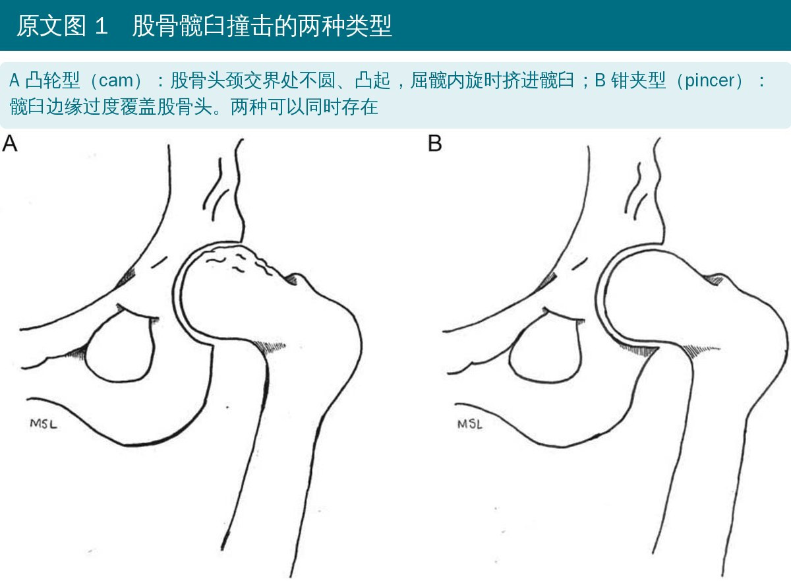
🔖原文图 1（加中文说明）
• 凸轮型（cam）：股骨头不圆；青少年运动员有凸轮畸形，早发退行性关节炎的风险更高；有研究认为它和青少年生长期的运动量、强度有关
• 钳夹型（pincer）：髋臼边缘过度突出，成因仍不清楚
• 过去 15 年髋关节镜治疗 FAIS 大幅增加，但有学者认为现有证据未必支持这种增长；英国 FASHIoN 随机对照试验则显示手术组结局更好
这篇综述有两个目的：概述 FAIS 的诊断，并整理非手术和术后康复方案中共同的运动要点。
2016 年国际共识（Warwick 共识）把 FAIS 定义为髋、腹股沟、背部和臀部出现疼痛症状的、与运动相关的临床疾病，诊断要结合症状、临床体征和影像。
• 常见症状：弹响、卡住、交锁、活动受限、活动时僵硬；用“C”字手势握住大转子上方按压，可能暂时缓解疼痛
• 问卷：改良 Harris 髋评分（mHHS）、国际髋关节结局工具 iHOT-33 / iHOT-12，但没有公认的金标准
• 查体按四层：骨软骨层、关节囊盂唇层、肌肉肌腱层、神经血管层；依次在站、坐、仰卧、侧卧、俯卧位检查
• 看内旋和屈髋活动度：坐位可以固定骨盆和屈髋角度来测内外旋；单侧内旋丢失提示 FAIS
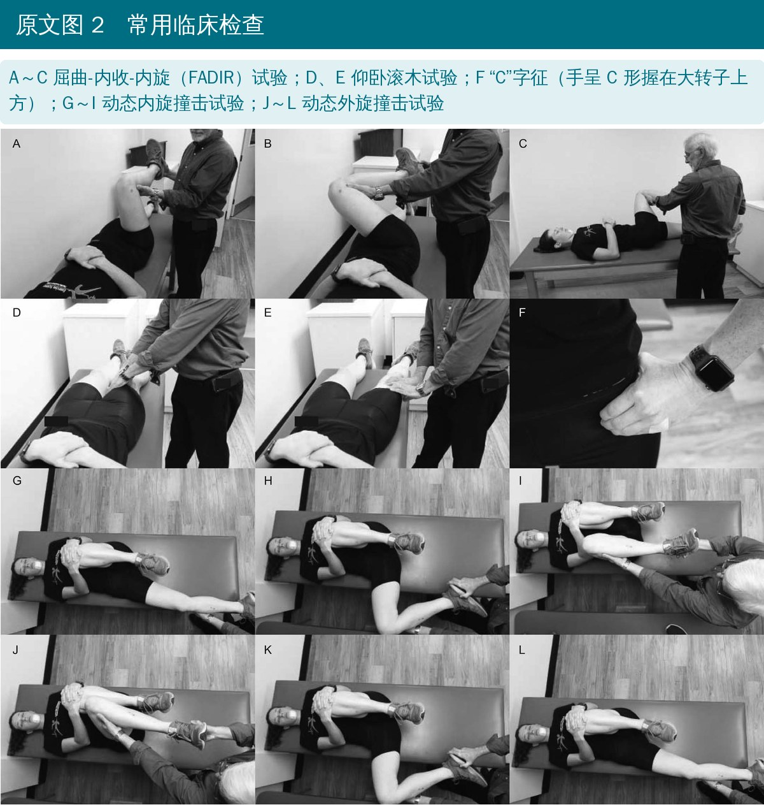
🔖原文图 2（加中文说明）
• FADIR 试验（屈髋 90°、内收过中线、最大内旋）：敏感度 94%、特异度 8%，是目前唯一被推荐用于帮助排除髋关节疾病的查体
• 滚木试验、Drehmann 征、动态内旋 / 外旋撞击试验等，统计价值要么不够、要么缺失；没有任何单一查体能可靠诊断 FAIS
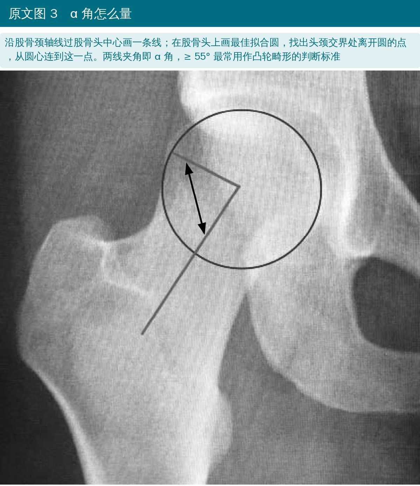
🔖原文图 3（加中文说明）
• 影像：骨盆正位和穿桌侧位 X 线判断形态；CT 或 MRI（尤其是关节造影）信息更多
• 凸轮畸形：最常用标准是 α 角 ≥ 55°；股骨头颈偏心距 < 10 mm 也强烈提示凸轮畸形
• 形态异常不等于有病变：要把症状、查体和影像放在一起判断
• 急性期：减少诱发疼痛的活动，按需休息、用非甾体抗炎药或止痛药
• 姿势教育：避免跷二郎腿和长时间保持同一姿势；日常和训练中减少屈髋-内收-内旋的组合动作；急性期可能要减少或暂停全蹲、患侧支撑转身
• FAIS 患者常见塌腰姿势和骨盆前倾，学会骨盆后倾可以减轻前倾、改善动作模式
非手术和手术的证据：
• 12 周物理治疗（髋和核心力量、手法、生活方式教育）后 iHOT-33 改善
• 8 周核心训练（骨盆后倾、鸟狗、臀桥、平板）加生活方式管理，提高了屈髋和内收力量
• 76 名青少年和年轻运动员接受结构化训练、活动和专项技能调整、休息后，70% 保守治疗成功
• 5 项随机对照试验的荟萃分析：非手术治疗是有效的初始选择，有监督的髋和核心力量训练让患者自评结局更好
• 现役军人研究：手术和物理治疗 2 年时没有差别，但很多人从物理治疗组转去做了手术
• FASHIoN 试验：12 个月时手术组 iHOT-33 比个体化物理治疗组高 6.8 分（p = 0.009），但手术组不良事件更多
• 回归运动：髋关节镜术后平均约 7 个月回归；精英运动员回归率 84%～93%，但按“回到伤前水平”的严格定义只有 57%
• 什么时候考虑手术：症状持续 12～24 个月以上的人手术效果更差，提示保守治疗 3～6 个月仍无改善，可以考虑手术；年龄越大手术成功率越低，但 40 岁以上没有明显退变的人也可能效果好
• 警惕“看片定手术”：把影像上的形态异常直接等同于病变，可能降低手术门槛
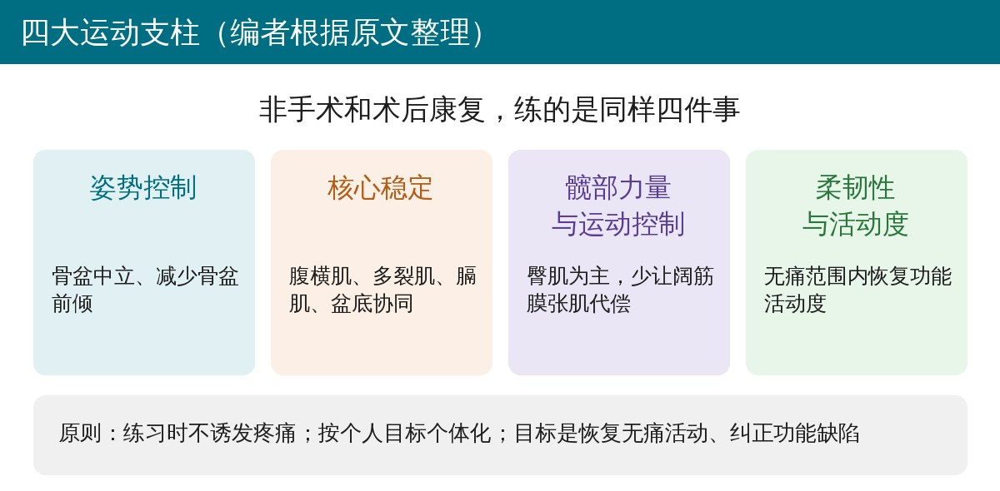
🔖四大运动支柱（编者根据原文整理）
在调整活动的基础上，做以抗阻训练和针对性牵伸为主、不诱发症状的运动。与术后急性期一样，要处理好组织激惹和疼痛；6～12 周内应该看到一些改善。
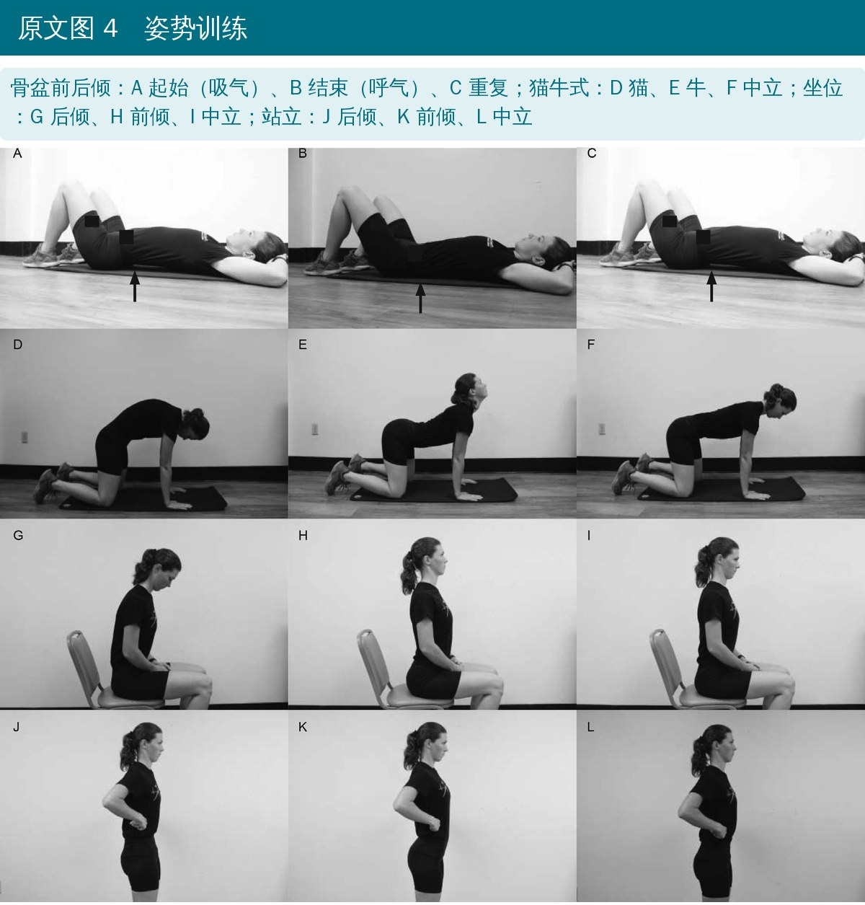
🔖原文图 4（加中文说明）
• 姿势：教会保持脊柱中立、提高身体觉察。从仰卧腹部收紧 + 骨盆前后倾开始，进阶到四点跪位腰椎屈伸，再到坐位、站立；提醒患者平时也要经常检查姿势，可以用视频、照片、倾角仪、量角器或手机应用记录
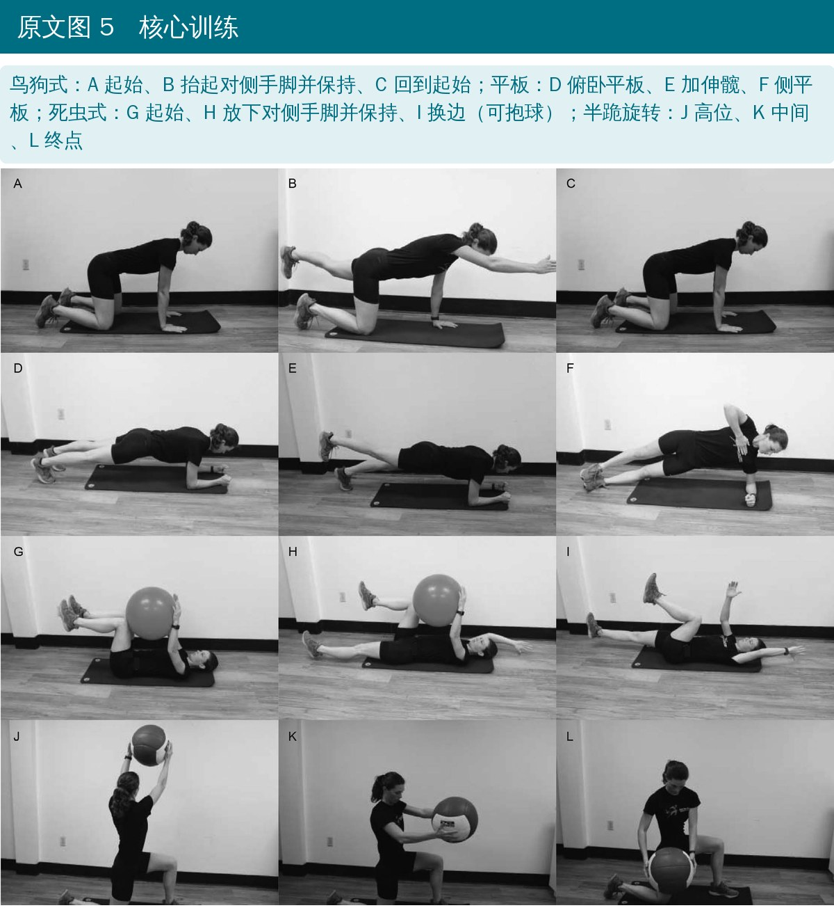
🔖原文图 5（加中文说明）
• 核心稳定：核心是动力链的支点。先在仰卧位把呼吸和腹部收紧协调起来，再进阶到双腿 → 单腿臀桥；鸟狗式、死虫式先单独动上肢或下肢，再对侧手脚一起；死虫式可用 Watkins-Randall 进阶，开始时治疗师把手放在患者腰下，让患者向下压
• 能全程保持中立位后，再加俯卧平板、侧平板，最后是坐、跪、站姿的旋转训练
• 核心达标参考：双直腿下放试验 4/5，俯卧平板保持中立 60 秒；也可用 60 秒侧平板评估
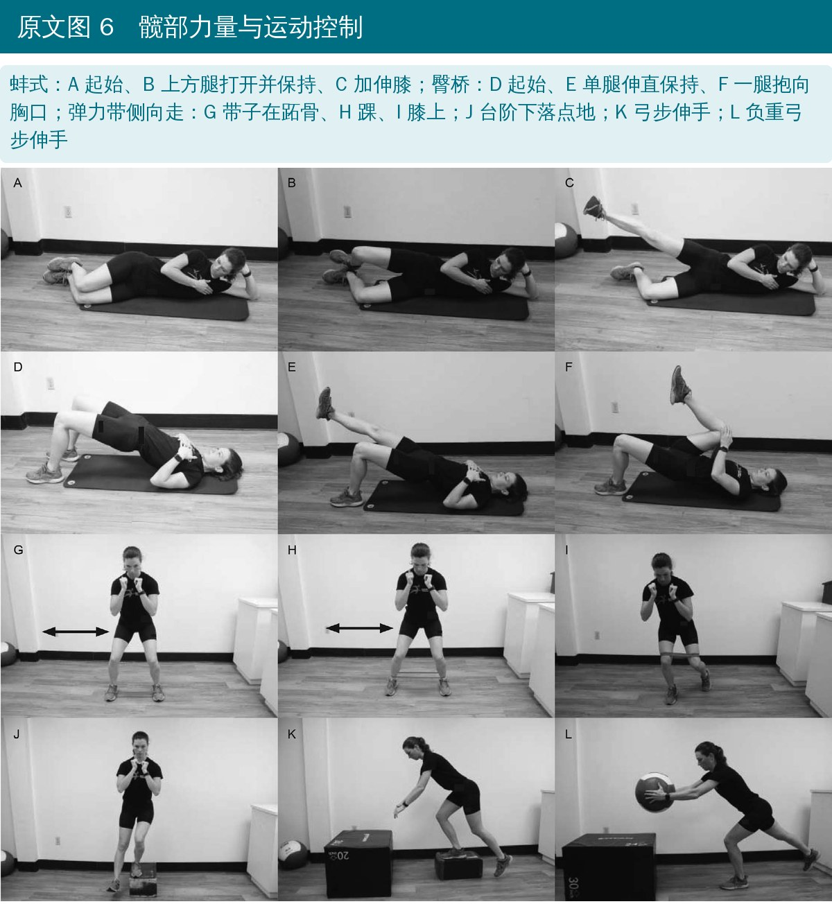
🔖原文图 6（加中文说明）
• 髋部力量与运动控制：FAIS 患者常有髋外展无力，阔筋膜张肌代偿性过度活跃；阔筋膜张肌有很强的内旋作用，内旋越多，症状往往越重
• 从侧卧外展、蚌式、臀桥开始，进阶到站立和动态练习
• 弹力带放在跖骨处做侧向走，力臂更长，能有效激活臀肌而不额外增加阔筋膜张肌活动
• 进阶到多方向台阶下落等单腿任务；女性在弹力带侧向走和前向台阶下落时屈髋更多，若同时骨盆前倾，可能加重症状，要注意骨盆控制
• 后撤弓步点地、单腿罗马尼亚硬拉（持木棍）、侧向台阶下落脚跟悬空等；3 组 × 10 次、每周 3～4 天；可加药球、壶铃、哑铃
• 评估：徒手肌力测试，手持测力计记录等长力量
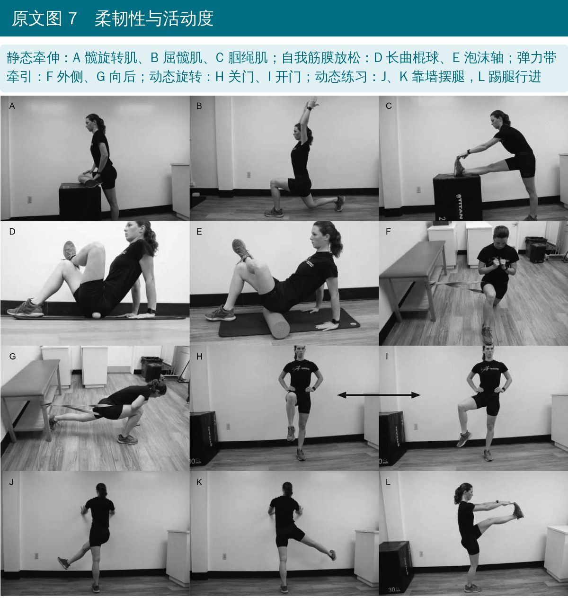
🔖原文图 7（加中文说明）
• 柔韧性与活动度：不能诱发疼痛，每天至少 1～2 次；静态牵伸保持 15～30 秒；仰卧“4 字”梨状肌牵伸若疼痛，可改在较高的平面上做
• 长曲棍球、泡沫轴自我筋膜放松；仰卧、俯卧、跪、半跪、站立位弹力带牵引自我松动
• 动态练习：开门 / 关门式髋内外旋、靠墙摆腿、踢腿行进、行进弓步，都要在无痛范围内、保持正确姿势
• 评估：Thomas 试验、Ober 试验；腘绳肌和梨状肌柔韧性按屈髋 90° 下的伸膝和外旋角度判断
6 周时的核心目标：仰卧到坐、坐到站反复转换时疼痛 0～2 分（满分 10 分）；能在不同地面行走、至少慢跑 30 分钟，并完成包含变向、跳跃、转身的专项动作。
术后康复以无痛活动和最佳髋关节功能为先，进阶节奏因术式而异：游离体取出、盂唇清理的人可以比盂唇修复、微骨折的人更快负重。阶段时间是灵活的，按个人反应调整。
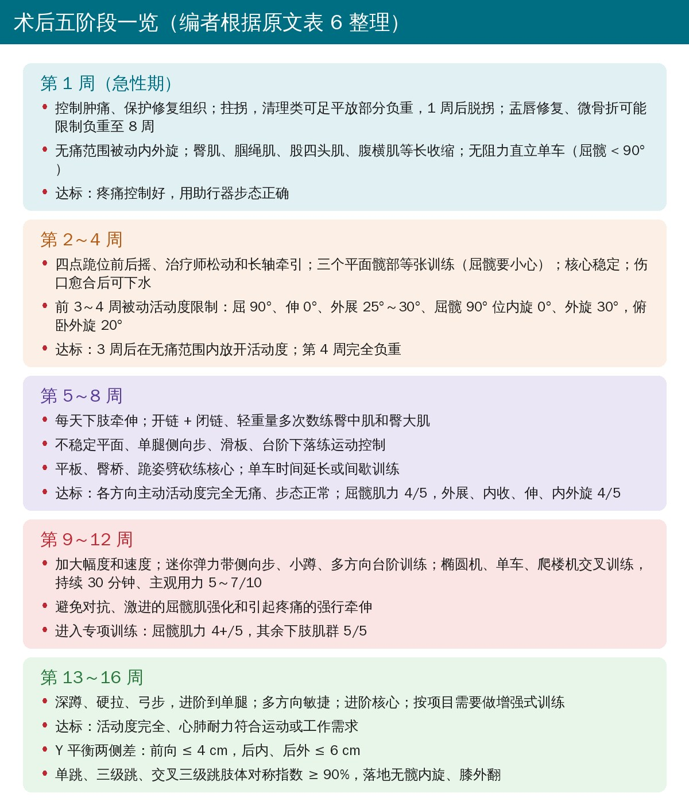
🔖原文表 6（编者整理）
• 第 1 周：控制疼痛肿胀、保护修复组织；屈髋要谨慎，避免刺激髂腰肌
• 第 2～4 周：恢复关节囊延展性、减少粘连；改善步态；闭链本体感觉训练；单车逐步加到 5～30 分钟，重点是活动度和耐力，而不是踏频和阻力
• 第 5～8 周：功能活动度、正常步态、在四点跪、跪姿、站立等功能体位下的髋和核心控制；屈髋肌力也是重点
• 第 9～12 周：加大幅度和速度，维持运动控制；恢复屈髋肌力、平衡、本体感觉和心肺耐力
• 第 13～16 周：从康复过渡到运动表现，强调发力和控制；单腿蹲时同侧髌骨不越过大脚趾所在平面；建议对变向、转身、单腿跳、跳箱落地和专项增强式动作做视频分析
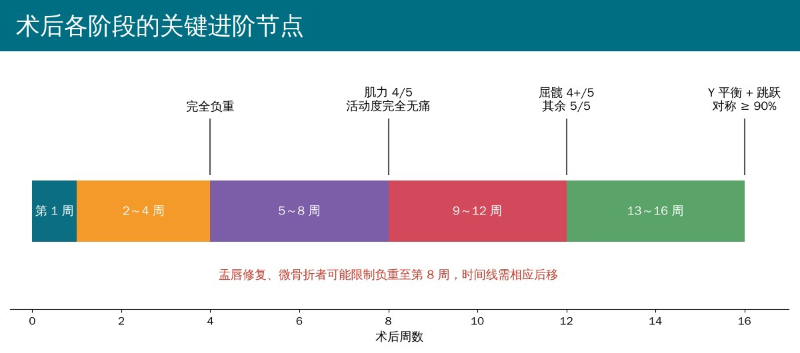
🔖按原文表 6 整理
作者总结：非手术和术后康复都围绕姿势、核心、髋部力量与运动控制、功能活动度这四个目标，骨盆稳定能保证股骨头在髋臼内对线良好；两种方案都要按患者的目标个体化，最终目标是恢复无痛活动、纠正功能缺陷。目前文献里还没有统一的进阶标准和记录方式。
• 叙述性综述，主要是专家意见：没有系统检索和纳入标准；运动方案部分的推荐多为 SOR C（基于共识、经验或病例系列）
• 非手术证据样本小：引用的多是小样本、短随访或预试验研究，70% 成功率来自一项 76 人的前瞻性研究，没有对照
• 术后时间表来自少数方案：五阶段时间和肌力标准主要参考 Domb 等、Spencer-Gardner 等的单中心方案，不同术式差别很大
• 徒手肌力测试不够敏感：4/5、5/5 这样的标准很难发现两侧差别，作为进阶门槛偏粗；有条件最好用测力计
• “6 周达到变向跳跃”与“6～12 周看到一些改善”放在一起看，目标偏乐观，且来自单一研究的出院标准
• 价值在于整合：把诊断要点、非手术和术后方案放在同一个框架里，配有大量动作图和 54 段视频，作为临床参考和患者教育素材很实用
• FADIR 的数字前后不一：正文说敏感度 94%、特异度 8%，表 4 却给出敏感度 0.2～0.94、特异度 0.08～0.8；敏感度低到 0.2 时并不能用来“排除”髋关节疾病
• 第 4 周完全负重与限制负重矛盾：正文说盂唇修复、微骨折可能限制负重至 8 周，表 6 的进阶标准却统一写“第 4 周完全负重”
• 活动度限制到第几周：表 6 写“急性期到第 3～4 周”限制被动活动度，紧接着又写“3 周后在无痛范围内进阶”
• 屈髋肌力的说法相反：正文说第 5～8 周“改善屈髋肌力也是主要目标”，第 9～12 周又把“激进的屈髋肌强化”列为注意事项，没有说明分寸
• “三个主要髋外展肌”：原文把臀大肌、臀小肌、臀中肌并列为三个主要外展肌；臀大肌主要是伸髋和外旋肌，通常不算主要外展肌
• 随机对照试验的证据等级：FASHIoN 是大型多中心随机对照试验，原文却标为 CEBM 3 级
• 双直腿试验名称不一：正文写“双直腿抬高试验”，表 7 描述的实际是双直腿“下放”试验；分级中 75° 同时出现在“一般（46°～75°）”和“差（75°～90°）”两档
• 表 5 的描述：“仰卧骨盆底前后倾”应为骨盆前后倾；“俯卧位做四点跪位腰椎屈伸”体位自相矛盾
• 参考文献作者名：文献 7（Voight 等 2010）第三作者是 Lance Gill，原文写成 Gill M
• 拼写：femoracetabular、Femoroacetabuar、abdominus；关键词里“hip rehabilitation”重复出现两次；表 7 的“6-point 6 scale”多了一个 6
• 诊断别只看片子：症状 + 查体 + 影像一起判断；FADIR 阴性有助于排除，阳性意义有限；α 角大不等于一定有症状
• 先保守 3～6 个月：活动调整 + 姿势教育 + 四大支柱训练，6～12 周应看到改善；无效再与医生讨论手术
• 姿势先行：教会骨盆后倾和中立位，减少跷腿、久坐、全蹲和患侧支撑转身
• 练臀肌、压住阔筋膜张肌：弹力带放在跖骨处侧向走，单腿动作时盯住骨盆和膝内扣，女性尤其注意屈髋和骨盆前倾
• 术后按阶段和标准推进：第 1 周保护，2～4 周恢复活动度和负重（修复类要更慢），5～8 周肌力 4/5，9～12 周屈髋 4+/5、其余 5/5，13～16 周用 Y 平衡和跳跃对称指数 ≥ 90% 把关
• 全程屈髋要小心：早期单车屈髋不超过 90°，避免卧式单车和激进的屈髋肌训练
• 客观测量：有条件用手持测力计代替徒手肌力测试，用视频分析落地和变向动作
表 1 FAIS 常见症状
| 患者常描述的症状 |
|---|
| 弹响 |
| 卡住 |
| 交锁 |
| 活动受限 |
| 活动时髋部僵硬 |
表 2 常用患者自评问卷
| 问卷 | 内容 |
|---|---|
| 改良 Harris 髋评分（mHHS） | 步态（跛行、助行器、步行距离）、上楼梯、下蹲、跷腿坐、乘坐公共交通、髋活动度和总体疼痛；0～100 分，< 70 差，> 90 优 |
| iHOT-33 | 33 项，评估健康相关生活质量，主要用于研究；症状、功能受限、运动娱乐、工作、生活方式；0～100 分，100 最好 |
| iHOT-12 | 由 iHOT-33 精简为 12 项，领域相同；每项 0～100 分，100 表示功能最好、症状最少 |
表 3 髋关节的四层结构
| 层次 | 相关结构 |
|---|---|
| 骨软骨层 | 股骨、髋臼、骨盆 |
| 关节囊盂唇层 | 盂唇、关节囊、韧带复合体、圆韧带 |
| 肌肉肌腱层 | 半侧骨盆肌群、腰骶肌群、盆底 |
| 神经血管层 | 胸腰骶神经丛、腰骨盆组织、下肢结构 |
表 4 FAIS 常用临床检查
| 检查 | 做法 | 阳性表现 | 敏感度 / 特异度 |
|---|---|---|---|
| FADIR 试验 | 仰卧，屈髋 90°、内收过中线、最大内旋 | 复现疼痛、内旋受限 | 0.2～0.94 / 0.08～0.8 |
| 仰卧滚木试验 | 轻轻内外旋滚动大腿，不牵拉关节外结构 | 复现疼痛 | 0.3 / — |
| Drehmann 征 | 仰卧被动屈髋 | 髋不可避免地被动外旋 | 0.44 / — |
| “C”字征 | 站立，手呈 C 形握在大转子上方加压 | 暂时缓解症状，提示关节内病变 | — / — |
| 动态内旋撞击试验 | 对侧屈髋固定骨盆，患髋从外展外旋大弧度摆到屈曲内收内旋 | 复现疼痛；记录撞击时的屈髋角度 | — / — |
| 动态外旋撞击试验 | 对侧屈髋固定骨盆，患髋从屈 ≥ 90° 经外展外旋大弧度到伸展 | 复现疼痛或不稳感 | — / — |
| 髋研磨试验 | 外展 45°、屈 90°，沿股骨轴向加压并内外旋 | 旋转时复现疼痛 | — / — |
正常髋活动度：内旋 35°～45°，屈曲 120°～130°，外旋 40°～50°，伸展 10°～20°。原文表 4 另列出阳性 / 阴性预测值（FADIR 分别为 0.16～0.67 和 0.44～0.89）。
表 5 非手术方案：重点领域与进阶示例
| 领域 | 示例 | 进阶 1 | 进阶 2 | 进阶 3 |
|---|---|---|---|---|
| 姿势 | 仰卧骨盆前后倾 | 四点跪位腰椎屈伸 | 坐位（椅子或球）骨盆前后倾 | 站立骨盆前后倾 |
| 核心稳定 | 四点跪鸟狗式 | 平板变式 | 死虫式（Watkins-Randall 进阶） | 坐、跪、站姿旋转 |
| 髋部力量与运动控制 | 侧卧开链外展（抬腿、蚌式） | 仰卧伸髋（臀桥） | 弹力带不同位置侧向走 | 台阶下落、多方向弓步 |
| 柔韧与活动度 | 三个平面静态牵伸 | 长曲棍球、泡沫轴筋膜放松 | 非负重位长轴或外侧牵引自我松动 | 靠墙摆腿、开关门、弓步伸手、玩具兵踢腿 |
表 7 进阶评估
| 领域 | 评估 | 说明 |
|---|---|---|
| 姿势 | 开放式 | 手机应用、照片、视频定性分析；倾角仪、量角器 |
| 核心稳定 | 双直腿下放试验 | 仰卧屈髋 90°，L4-5 下放血压计袖带充气至 40 mmHg；腹部收紧后慢慢放下双腿，出现压力波动或骨盆前倾即停止。5/5：0°～15°；4/5：16°～45°；3/5：46°～75°；2/5：75°～90° |
| 核心稳定 | 平板支撑 | 俯卧前臂平板，目标保持 60 秒 |
| 髋部力量 | 徒手肌力测试 | 0～5 级。臀中肌：侧卧、伸髋 10°～15°、中立旋转；臀大肌：俯卧屈膝 90°、伸髋 10°；臀小肌：侧卧、屈髋 10°～15°、中立旋转 |
| 髋部力量 | 手持测力计 | 客观记录下肢力量，可能减少测量误差 |
| 柔韧与活动度 | 量角器 | 内旋 35°～45°，屈曲 120°～130°，外旋 40°～50°，伸展 10°～20° |
| 柔韧与活动度 | Thomas 试验 | 对侧屈髋，伸展患髋；腰椎过度前凸或大腿不能贴床为阳性 |
| 柔韧与活动度 | Ober 试验 | 检查髂胫束紧张；健侧卧，肩和骨盆成一线，下方髋膝屈曲消除腰椎前凸 |
欢迎关注骨科康复小黄公众号，获取更多物理治疗的专业知识！
📄参考文献：
Terrell SL, Olson GE, Lynch J. Therapeutic exercise approaches to nonoperative and postoperative management of femoroacetabular impingement syndrome. J Athl Train. 2021;56(1):31-45. doi:10.4085/1062-6050-0488.19
原文版权归美国国家运动防护师协会（NATA）所有。本文为中文解读，仅作学术交流：插图引自原文图 1～图 7（编者加中文说明），四大支柱卡、术后五阶段卡和进阶节点图为编者根据原文整理，表格为编者翻译。